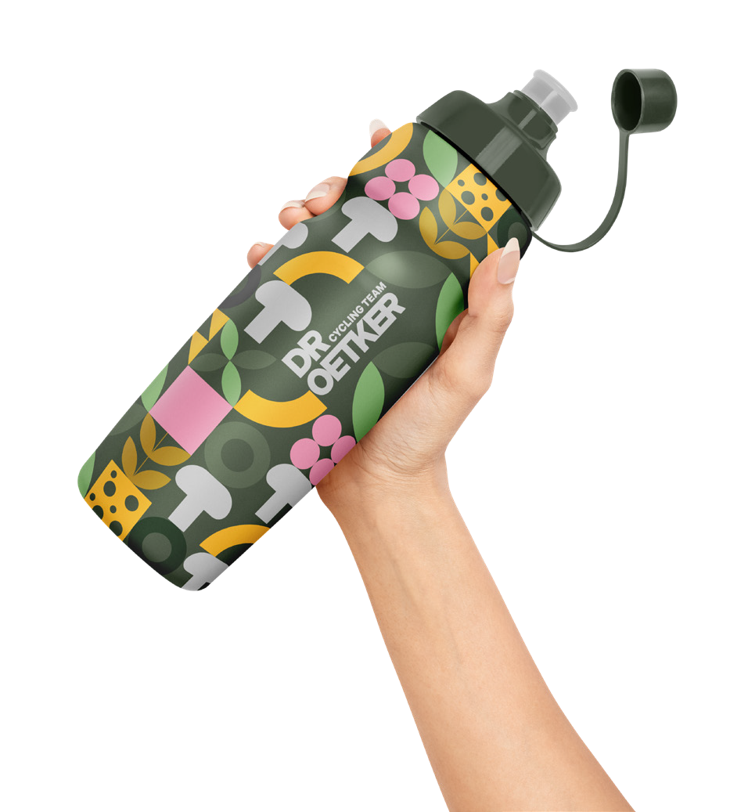
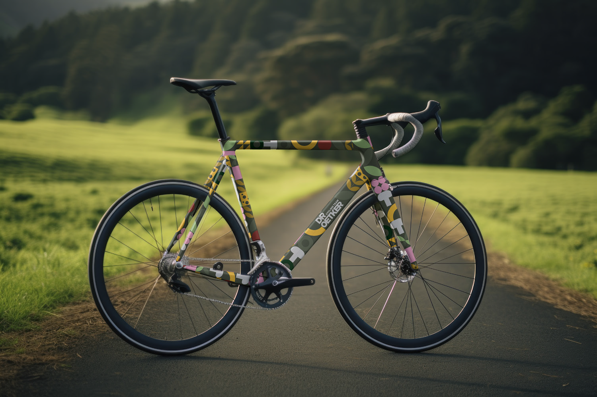
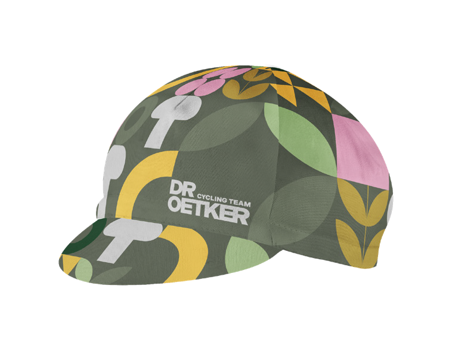
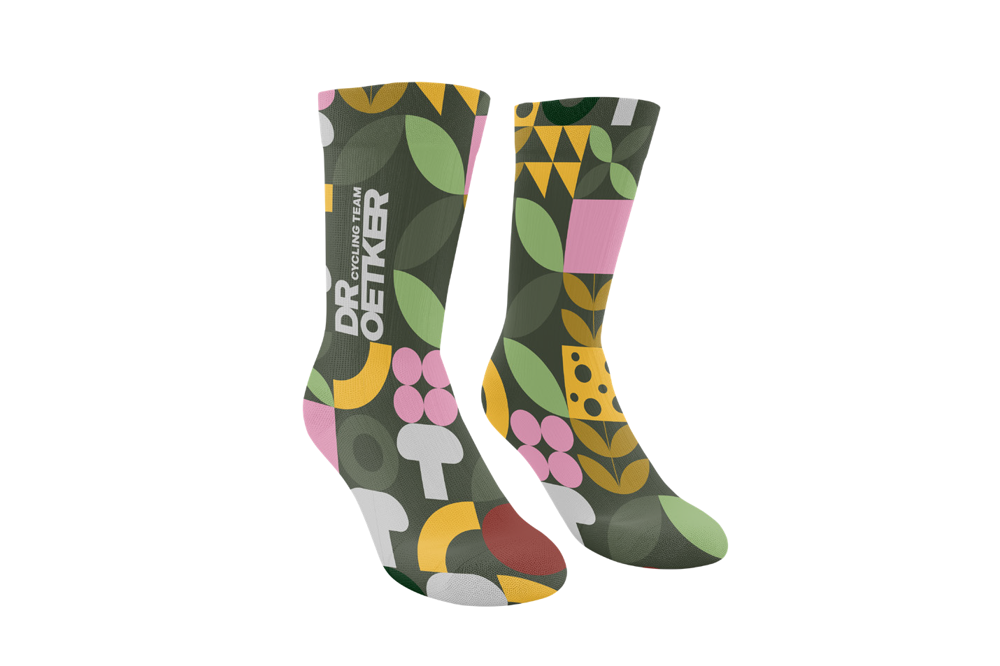

Vandaag de dag staan veel wielershirts helemaal vol met kriskras geplaatste sponsorlogo’s. Logisch natuurlijk voor de reclame, maar het maakt een tenue vaak een stuk minder mooi dan de klassiekers van vroeger. Als opdracht kregen we de taak om één sponsor te kiezen uit een lijst en daarvoor een toffe, grafische wielerset te ontwerpen, inclusief attributen zoals een petje, kousen, drinkbus en een fiets.
Mijn gekozen sponsor is Dr. Oetker. Omdat het merk vooral bekendstaat om zijn pizza’s, wilde ik die link op een creatieve manier verwerken. Als je goed naar het shirt kijkt, ontdek je in elk abstract element een ingrediënt dat op een pizza kan liggen.
Ik heb gekozen voor een geometrische, abstracte stijl. De vormgeving bestaat uit strakke, platte vormen die samen een speels en herhalend patroon vormen. Het kleurgebruik is fris en herfstachtig, met natuurtinten die prachtig contrasteren met de donkergroene achtergrond.
De uitdaging was: hoe breng je een sponsor op een subtiele én grafische manier in beeld zonder dat het een wandelende reclamebord wordt? Dr. Oetker staat bekend voor zijn pizza’s, dus ben ik gaan zoeken naar een stijl om ingrediënten om te zetten naar gestileerde vormen.
In het patroon vind je de volgende ingrediënten terug:
Een opvallend en stijlvol wielertenue waarin sponsoring en grafisch ontwerp perfect samenkomen. Het is een uniek shirt geworden dat echt opvalt in het peloton, met een knipoog naar iedereen die goed naar de details kijkt.